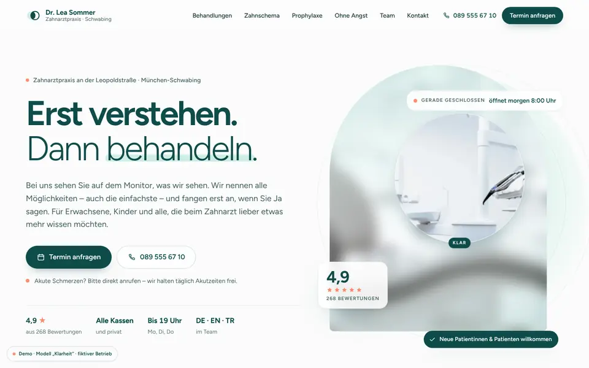
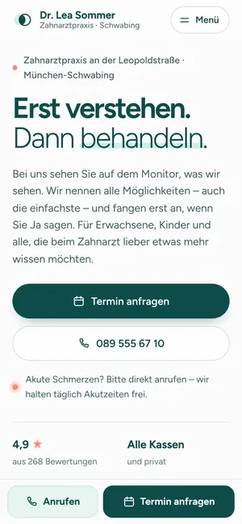

Case Study 15 / 30 · Gesundheit
Zahnarztpraxis Dr. Lea Sommer
Modell „Klarheit“
Helle, ruhige Zahnarzt-Seite mit interaktivem Zahnschema, Atemübung und Terminanfrage in drei Schritten.


Ausgangslage
Eine erfundene Zahnarztpraxis in München-Schwabing. Viele Besucher kommen mit Unbehagen: Sie wollen zeigen können, wo es wehtut, verstehen, was bei einer Behandlung passiert, und sich einen Termin sichern, ohne anrufen zu müssen. Die Seite soll erklären statt verkaufen und Angstpatienten ernst nehmen.
Idee
Hell, ruhig und klinisch-frisch, aber nicht kalt: Weiß und Minze als Flächen, tiefes Petrol für Text und dunkle Abschnitte, Koralle nur sparsam. Figtree als einzige Schrift wirkt rund und freundlich. Das Motiv der Klarheit zieht sich durch – eine klare Linse im Milchglas-Hero, ein Leitsatz, der beim Scrollen Wort für Wort scharf wird.
Was die Seite kann
- Interaktives Zahnschema32 Zähne nach FDI-Schema, Bereichs-Buttons, Behandlungs-Tabs mit Relevanz-Balken, vollständig per Tastatur bedienbar; ein Klick trägt Zahn und Thema in die Terminanfrage ein.
- Klarheits-Linseeine scharfe Linse folgt im Hero der Maus oder driftet langsam über das unscharfe Foto.
- Prophylaxe in sechs SchrittenIllustration wechselt beim Scrollen, Kosten-Umschalter zwischen gesetzlich und privat versichert.
- Atemübung 4-4-6Start und Stopp, fünf Runden, Phasen per aria-live angesagt, bei reduzierter Bewegung pulsiert nur die Helligkeit.
- Terminanfrage in drei SchrittenAnliegen, Wunschzeit-Raster, Kontakt – mit Validierung je Schritt und Zusammenfassung.
- Team-Karussell mit Sprachfilter, Praxis-Rundgang als horizontale Strecke, Öffnungsstatus nach Berliner Zeit.
Dein Betrieb
So eine Seite für dich?
Schreib mir kurz, was du anbietest und was deine Website leisten soll. Du bekommst eine ehrliche Einschätzung, was sie kostet und was sie dir bringen kann.
Projekt anfragen